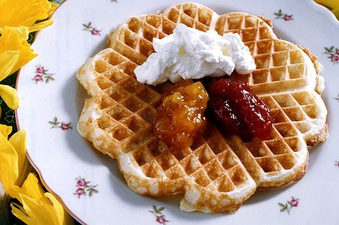

Basic Waffle Recipe
Ingredients
- 2 eggs (whites and yolks divided)
- 2 1/4 cups flour
- 1 3/4 cups milk (preferably whole)
- 1/2 cup vegetable oil
- 2 tablespoons sugar
- 4 teaspoons baking powder
- 1/4 teaspoon salt
- 1 tablespoon vanilla
- In a small bowl, beat egg whites until they are foamed and frothy. Whip in yolks and set aside.
- In a large bowl, whisk together remaining ingredients. Lastly, blend in eggs.
- Heat waffle iron and lightly coat with cooking spray. Ladle in waffle batter.
- Cooking times will vary greatly depending on your waffle iron, approximately 2 1/2 -5 minutes. Cook until waffles are lightly browned and crispy.
- Remove and enjoy your fresh waffles!
- Enjoy!

Back